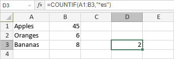

COUNTIF funkcija
Funkcija COUNTIF je jedna od statističkih funkcija. Koristi se za brojanje izabranih ćelija na osnovu navedenog kriterijuma.
Sintaksa
COUNTIF(range, criteria)
Funkcija COUNTIF ima sledeće argumente:
| Argument | Opis |
|---|---|
| range | Izabrani opseg ćelija koje želite da prebrojite primenom navedenog kriterijuma. |
| criteria | Kriterijum koji želite da primenite. |
Napomene
Argument criteria može da sadrži džoker znakove — znak pitanja (?) koji odgovara jednom znaku i zvezdicu (*) koja odgovara više znakova. Ako želite da pronađete znak pitanja ili zvezdicu, unesite tildу (~) ispred znaka.
Kako primeniti funkciju COUNTIF.
Primeri
Slika ispod prikazuje rezultat koji vraća funkcija COUNTIF.
